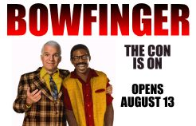
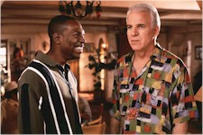
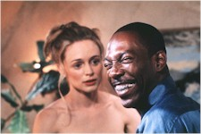

Contents | Features | Reviews | Books | Archives | Store |
 |
|
| Movie Credits | Buy It! |
Bowfinger
Review by KJ Doughton
Posted 16 July 1999
|  | Directed by Frank Oz. Starring Steve
Martin, Written by Steve Martin |
Steve Martin is a comic with a conscience. His film projects are funny, but free of the biting cynicism and vulgar toilet guffaws that taint most contemporary onscreen comedies. Not that cynicism and vulgarity aren’t funny: Wag the Dog was a chuckle-inducing example of the former, while American Pie defined the latter, dredging guilty laughs from the very bottom of the compost barrel. But in this age of bitter sarcasm, Martin’s Bowfinger comes across as a much-needed breath of fresh air. Oh, sure -- the films comes jam-packed with clever societal truth telling: Hollywood’s cutthroat mentality is skewered, racial paranoia is called on the carpet, and Scientology-style pseudo-religious celebrity hangouts are poked fun at. But there’s a sweet side to Bowfinger that keeps such satire light. Like Weird Al Yankovich and his rock video parodies, Martin laces his barbs with a certain amount of affection and respect. Looking for sledgehammer symbolism, doused in arsenic and served up rare? Look up Oliver Stone, not Martin.
Bowfinger concerns a down-and-out filmmaker stumbling around on the fringes of Hollywood society. Burdened by debt and inhabiting a dilapidated hovel of an office, Bobby Bowfinger (Martin) is an Ed Wood for the nineties. When an associate pens an aliens ‘n action script called Chubby Rain, Bowfinger pulls out all the stops to give it a life onscreen. He passes the script on to a bigwig agent, who reassures him a deal as long as hot star Kit Ramsey (Eddie Murphy) agrees to star in the film. Problem is, Ramsey is too big a fish for the small-time Bowfinger to land. He’s also an emotional mess. A nervous clump of frayed nerves and narcissism, Ramsey cries "racism" at the slightest provocation. When his agent admits that a recent script "isn’t Shakespeare," the star becomes incensed: "Shakespeare," he retorts, "as in ‘shake a spear’? You’re calling me a spear-chucker!" Meanwhile, he takes spiritual refuge at a new age center called Mind Head, run by a pretentious guru (Terrence Stamp).
After Ramsey rejects Bowfinger’s Chubby Rain proposal, the persistent director cooks up a desperate scheme to boost the morale of his meager stable of talent. The "Bowfinger International Pictures" crew includes would-be leading man Dave (Jaime Kennedy), stage actress Carol (Christine Baranski), Iranian accountant and sometimes screenwriter Afrim (Adam Alexi-Malle), and Ohio upstart Daisy (Heather Graham). Running near empty on a string of Bowfinger’s false promises, the enthusiasm of this patient lot is rekindled when he announces, untruthfully, that Ramsey has committed to the project. How to worm his way out of this dilemma? Taking a lesson from such guerilla-style hit-and-run filmmakers as radical documentarian Nick Broomfield (Kurt and Courtney), Bowfinger plans to film Ramsey without the star even knowing he’s in Chubby Rain. With actors and crew stalking the insecure star through restaurants, parking lots, and freeways, Ramsey is horrified by both the parade of freaks that he’s ambushed by, and the ominous rants about alien abduction which are cast his way. The confrontations are often accompanied by special effects: one Bowfinger thespian is melted down in vivid, Rick Baker-style horror makeup as the wide-eyed, bewildered Ramsey stares forth unknowingly.
Things are complicated by the appearance of Jiff (Murphy), a bespectacled nebbish with a metallic mouth of brace-laden teeth. On account of his uncanny resemblance to Kit, Jiff is hired to the project as a stunt double. His "baptism of fire" involves sprinting across interstate freeway traffic during rush hour, and the scene is a hilarious slaptick vision, with staff cheerfully egging this terror-stricken social recluse on as he runs this gauntlet, Road Warrior-style, like Steve Prefontaine cloned with Family Matters’ Urkel. But Murphy presents Jiff in such a three-dimensional light that you whince at how sad a case he is, even as you’re giggling at his geeky mannerisms.
Indeed, the contrast between Kit’s high octane motor mouthing and Jiff’s bashful banter makes on realize how versatile an actor Murphy is in this double role. As a Saturday Night Live mainstay during the seventies, Murphy coupled his quick wit with a childlike innocence that also accented subsequent movie roles in 48 Hrs., Trading Places, Beverly Hills Cop, and Coming to America. Things took a mean turn, however, as Murphy helmed the joyless, shapeless, laughless Harlem Nights and slummed through sequels to previous triumphs. The magic came back -- to a certain extent -- with The Nutty Professor, and it’s even more apparent in Bowfinger. There were whispers of an Oscar nomination surfacing for The Nutty Professor (which didn’t materialize). Such a buzz is sure to follow in Bowfinger’s wake, as well. The Kit/Jiff combo performance is Murphy’s best since his star turn as Reggie Hammond in the original 48 Hrs.
Meanwhile, Martin anchors the film with his portrayal of the low-rent yet optimistic hero of Bowfinger. There’s a scene where Martin has second thoughts about exploiting the gullible Jiff. "I just developed a conscience," he sulks. "I can’t go on with this." It’s a pivotal moment, but not a surprising one. Like Bowfinger himself, Martin is only content to wallow in the muck for so long before ultimately choosing to do the right thing. By refusing to dunk Bowfinger into the toilet of currently fashionable lowbrow humor, and investing in some memorable characterizations, he shows that he’s still marching confidently to the beat of his own decent drummer.
Contents | Features | Reviews
| Books | Archives | Store
Copyright © 1999 by Nitrate Productions, Inc. All
Rights Reserved.